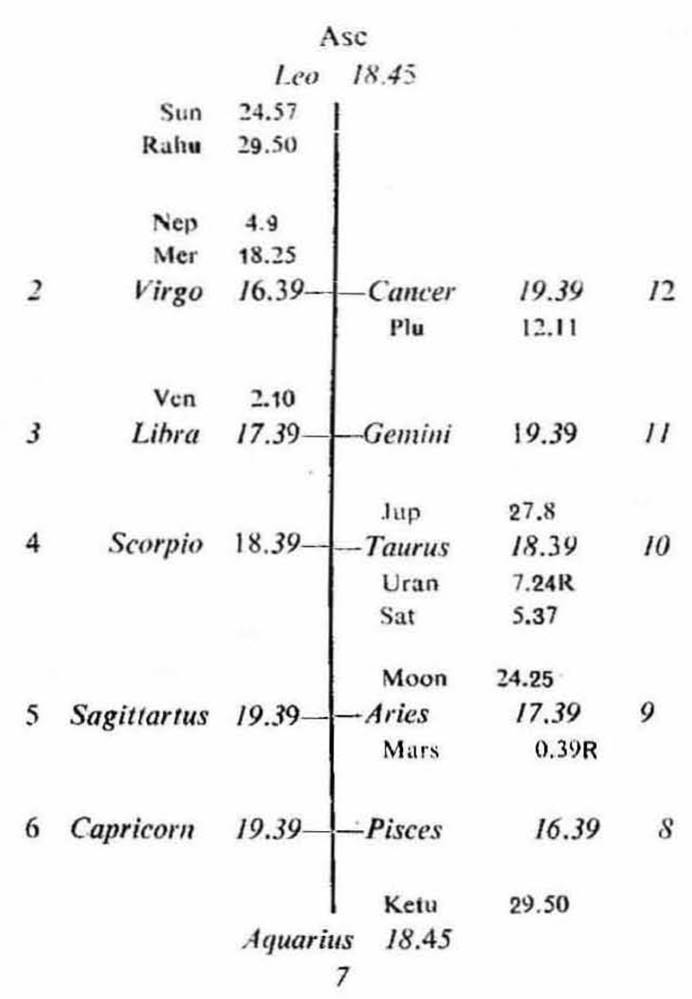
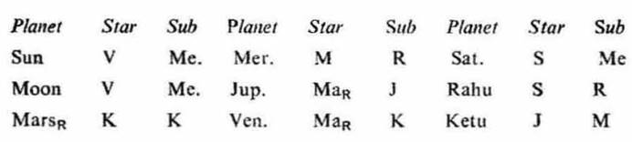

Female. Birth 11-9-1941 Thursday: 6-0 A.M. I.S.T; 22°N 41', 72°E 55'; Ayanamsa 22° 56'.


5th cusp. The sub lord of the 5th cusp is Rahu. Rahu is restrictive and malefic: it occupies the barren sign Leo in the 1st: it is in the star Sun which owns and occupies the 1st in Leo; it is in its own sub Rahu which is in conj. with Sun. So Rahu is the significator of 1 (absence of child birth). Rahu, its star lord and sub lord all these three are in the barren sign and in the 1st. Hence the cuspal sub lord of 5 (Rahu) does not promise child birth to the native.
11th susp. The sub lord of the 11th cusp is Mars. Mars is a natural malefic planet, it occupies the barren sign Aries in the 8th; it is in the star and sub of Ketu. Ketu is in the 7th, it being aspected by the owner of the 1st Sun in Leo. has to give the results of Sun. Thus the cuspal sub lord of 11 (Mars) is connected with the barren sign, the 1st house and Ketu (which is both preventive and malefic): so it does not promise child birth to the native.
The native was born during the period of Venus with balance of 3Y 4M 15D. The period of Mars was current from 16-1-1961 to 16-1-1968. But there was no birth of a child during this time, because Mars as mentioned above is not favourable for child birth. The period of Rahu is current from 16-1-1968, it also does not promise child birth as already discussed above. Hence there is no possibility of any child birth.